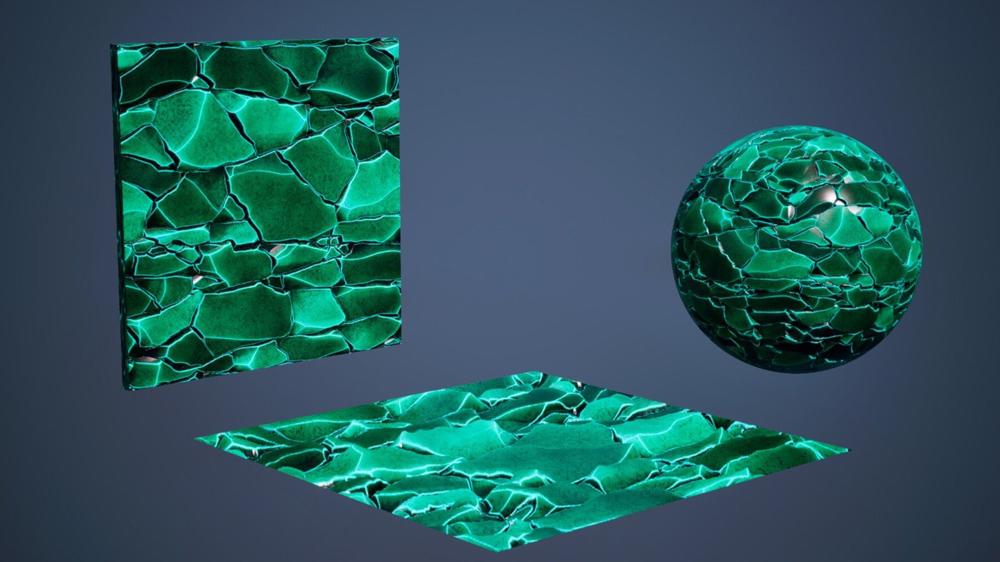
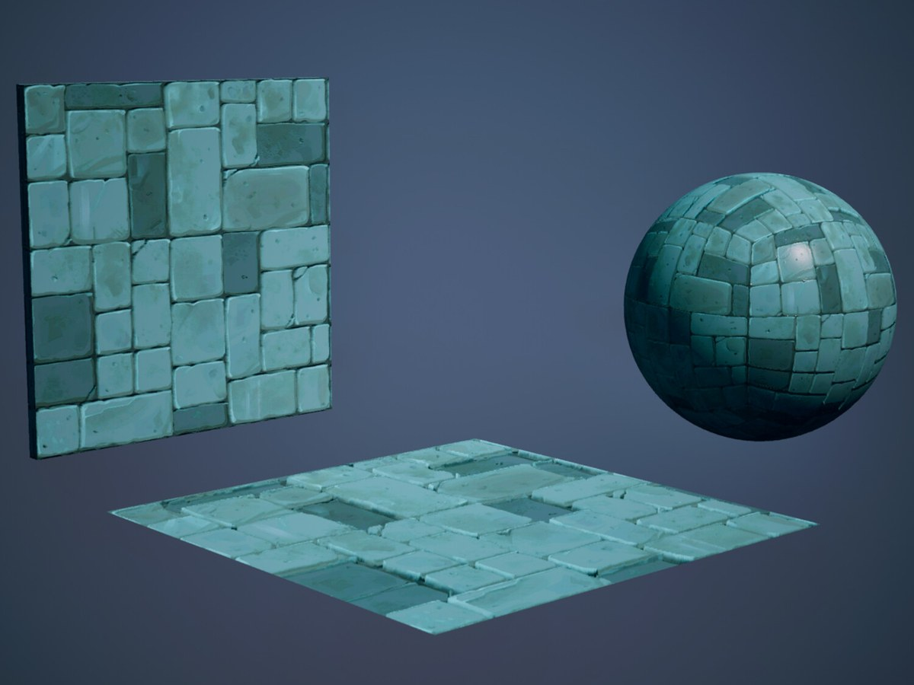
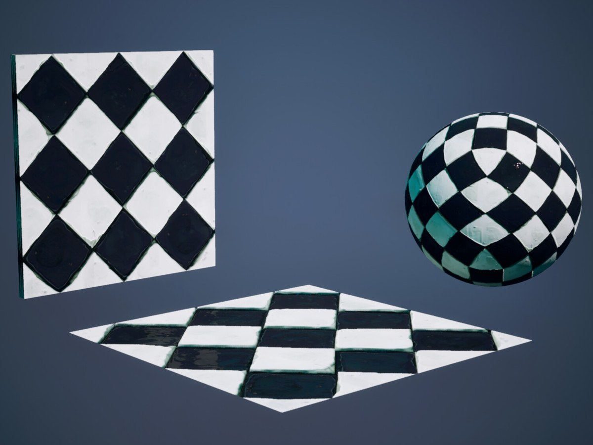
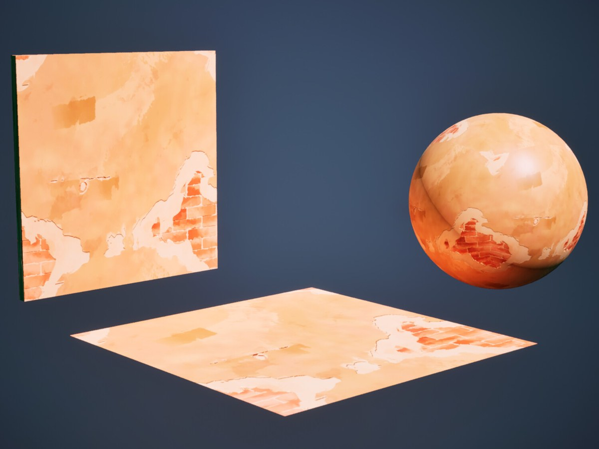
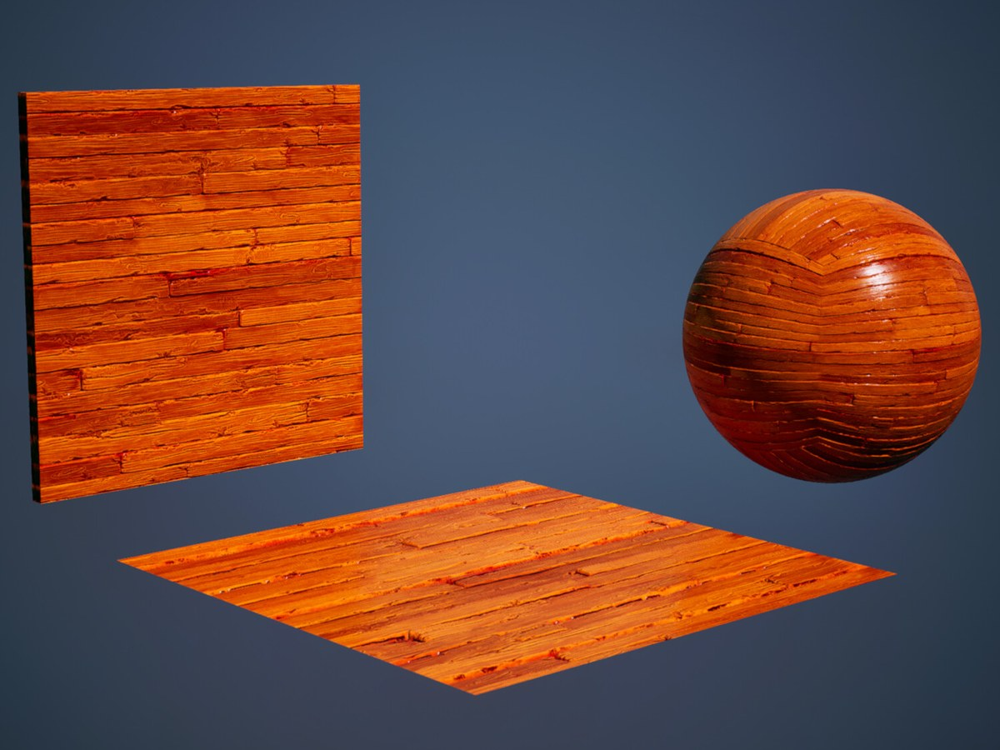
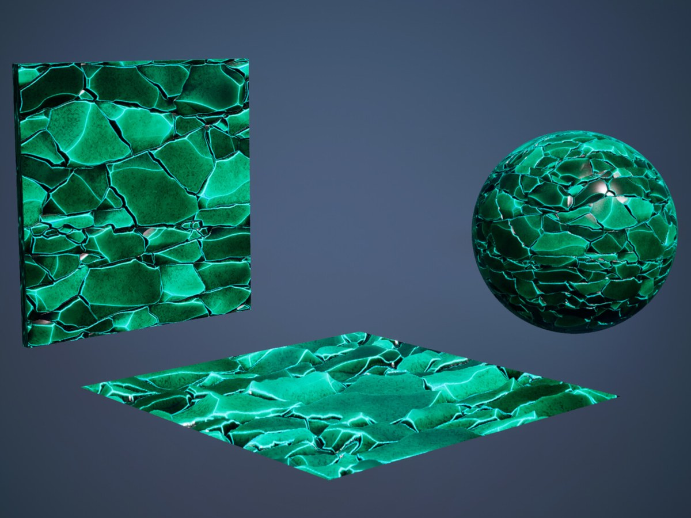
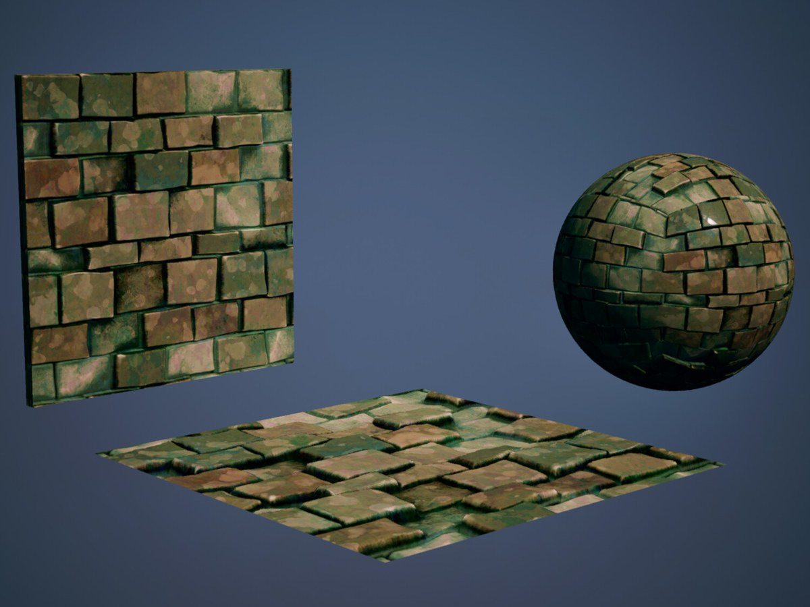

Stylized Parallax Occlusion Materials
Stylized materials that fake deep surface detail with Parallax Occlusion, so the meshes stay low-poly.
- Studio
- Orange Planet Labs
- Role
- Material artist
- Tools
- Substance Painter, Substance Designer, Unreal Engine 5
- Year
- 2024

Overview
A showcase of stylized materials I made for Orange Planet Labs, authored in Substance Painter and Substance Designer. They work with Parallax Occlusion directly in Unreal Engine 5, which simulates surface depth in the shader so the geometry can stay basic, with very few polygons.
Parallax Occlusion offsets the texture lookup per pixel according to a height map and the viewing angle, so flat surfaces read as if they had real relief. The trade-off is a higher cost per pixel in exchange for much lighter geometry, which suits stylized real-time assets.
The set covers moss-covered brick, stone tiles, glazed checker tiles, wood planks, plaster with exposed brick and cracked stone with glowing edges. Each material is shown on a wall, a floor and a sphere to check how it reads on flat surfaces and on curvature.
All of the renders were made inside Unreal Engine, with no additional software. I'm happy with how this practice turned out and I'd like to keep making more materials of this kind.
What I did
- Authored stylized materials in Substance Designer and Substance Painter, with the height information that parallax needs.
- Set them up in Unreal Engine 5 with Parallax Occlusion so simple geometry shows convincing relief.
- Kept the meshes basic, with very few polygons, and moved the detail into the material.
- Tested each material on a wall, a floor and a sphere to check how it reads on flat surfaces and on curvature.
- Rendered the whole showcase inside Unreal Engine, with no additional software.
- Created the materials for Orange Planet Labs.
Gallery





